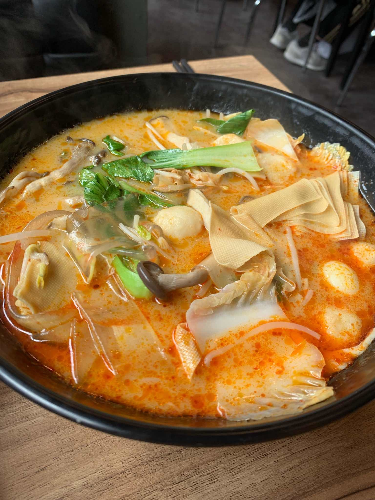

마라탕 소개글
 마라탕은 중국 음식으로 여러가지 향신료와 재료를 섞어 만든 음식입니다. 향신료가 가득 들어가는 음식이기
때문에 향신료의 냄새에 약한 분들은 선호하지 않을 수 있습니다. 하지만 향신료를 매우 좋아하는 사람들
이라면 적극 추천하는 음식 중 하나입니다! 그리고 매운맛을 내는 마라를 사용하여 만들기 때문에 매운 음식을
좋아하는 분들이라면 더욱 좋아할 음식입니다.
마라탕을 먹는 법은 간단합니다! 일단 통에다가 원하는 재료들을 담습니다. 재료의 종류로는 햄, 떡, 면사리, 청경채
메추리알, 감자, 고구마, 새우, 고기, 숙주, 건두부, 당면 등등이 있습니다. 자신이 원하는 재료를 선택해서 담을
수 있는 것이 장점입니다! 다 담은 재료를 가져가서 주문하면 맵기의 단계를 선택할 수 있습니다. 이것 또한 선택할
수 있기 때문에 편리합니다! 다 끝났으면 자리에 앉아서 기다리고 음식이 나온 후 마라탕을 즐기면 됩니다!